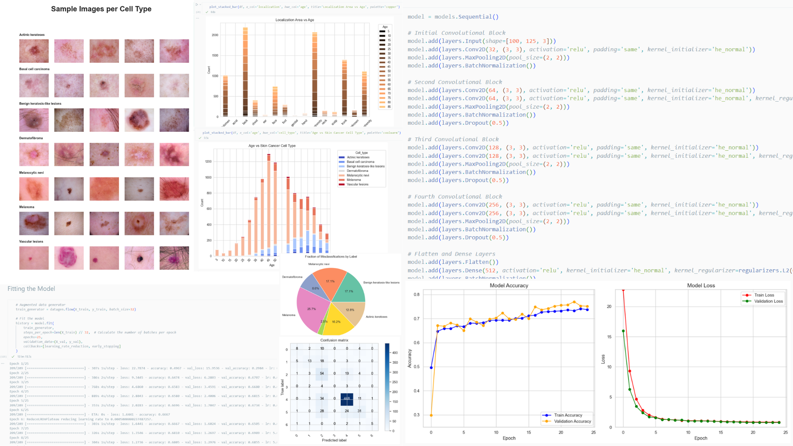

CNN-Based Classification of Skin Cancer Images
A Convolutional Neural Network implemented using TensorFlow Keras to classify skin cancers from dermatological lesions into categories like melanoma and benign using the HAM10000 skin dataset.
Deep Learning
TensorFlow
Keras
Exploratory Data Analysis
